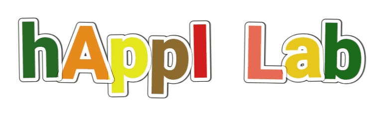

Our research focuses on designing technology capable of creating
Affective Interactions with humans and contributing to their well-being.
We conduct interdisciplinary research at the intersection of Human-Computer
Interaction, Psychology, and Artificial Intelligence.
Rooted in Affective Computing, our goal is to design interactive technologies that are
genuinely helpful or simply enjoyable.
-
[27 November 2023] Open Positions
We are hiring research assistants (fellowships) for our project COmputational Models of COmmensality for Artificial Agents (COCOA).
Please contact the coordinator for more details.
-
[23 August 2023] New paper on emotion recognition
Our paper
Unleashing the Transferability Power of Unsupervised Pre-Training for Emotion Recognition in Masked and Unmasked Facial Images
was just accepted to IEEE Access.
-
[31 July 2023] New Project
2-years PRIN 2022 project "COmputational Models of COmmensality for Artificial Agents (COCOA)" was just accepted.
In collaboration with prof. Maurizio Mancini from University of Rome, La Sapienza
we start new exciting research on social robots becoming commensal companions.
Read more about our ongoing and past projects here.
Check our list of available Master thesis and/or interships at the University of Genoa.